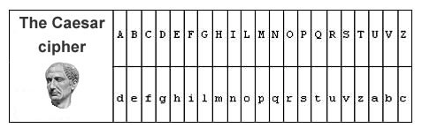

HOME
TRASMISSIONE IN CHIARO
TRASMISSIONE SIMMETRICA
TRASMISSIONE ASIMMETRICA
CRITTOGRAFIA
Crittografia
La crittografia tratta delle "scritture nascoste", ovvero dei metodi per rendere un messaggio "ofuscato" quindi criptato e non leggibile. In crittografia, il cifrario di Cesare è uno dei più antichi algoritmi crittografici di cui si abbia traccia storica. È un cifrario a sostituzione monoalfabetica, in cui ogni lettera del testo in chiaro è sostituita, nel testo cifrato, dalla lettera che si trova un certo numero di posizioni dopo nell'alfabeto. Questi tipi di cifrari sono detti anche cifrari a sostituzione o cifrari a scorrimento a causa del loro modo di operare: la sostituzione avviene lettera per lettera, scorrendo il testo dall'inizio alla fine.

La macchina enigma
Enigma fu un dispositivo elettromeccanico per cifrare e decifrare messaggi. Macchina nata da un tentativo di commercializzazione poi fallito, fu ampiamente utilizzata dalle forze armate tedesche durante il periodo nazista e della seconda guerra mondiale. La facilità d'uso e la presunta indecifrabilità furono le maggiori ragioni del suo ampio utilizzo